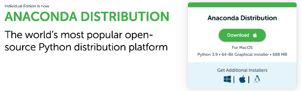
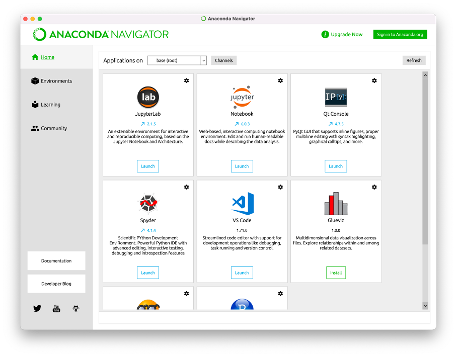

1 Installation & Setup
Grundlagen
Bevor wir uns inhaltlich in die Welt der Datenanalyse begeben, müssen wir uns zunächst mit der technischen Umgebung beschäftigen, in der wir unsere Analysen durchführen werden. Wir müssen uns also zunächst mit der Frage beschäftigen, wie wir Python nutzen können. Bis vor wenigen Jahren, war dies eine recht komplizierte Angelegenheit. Heute ist es jedoch sehr einfach, Python zu nutzen.
Prinzipiell benötigen wir zwei Dinge, um Python nutzen zu können:
Ein Programm, in dem wir unseren Python-Code schreiben
Ein Programm, mit dem wir unseren Python-Code ausführen können
Programme, um Python-Code zu schreiben
Python kann in verschiedenen Arten von Programmen geschrieben werden, jedes mit seinen eigenen Vor- und Nachteilen.
Einfache Texteditoren: prinzipiell können Sie in jedem einfachen Texteditor Python (oder auch anderen) Code schreiben. Beispiele für einfache Texteditoren sind z.B. Notepad++. Auch wenn es möglich ist, Python-Programme in einem solchen Texteditor zu schreiben, ist dies nicht besonders effizient oder komfortabel, da einfache Texteditoren keine Syntaxhervorhebung oder Code-Formatierung bieten bzw. andere hilfreiche Funktionen, die für das Schreiben von Python-Code nützlich sind.
Spezielle Texteditoren: Spezielle Texteditoren sind in der Regel leistungsfähiger als einfache Texteditoren und bieten zusätzliche Funktionen, die speziell für das Schreiben von Programm-Code benötigt werden (z.B. Syntaxhervorhebung, Debugging, Profiling und Integration mit Versionierungssystemen). Beispiele für spezielle Texteditoren sind Visual Studio Code oder Sublime.
Integrierte Entwicklungsumgebungen (IDE): Eine integrierte Entwicklungsumgebung ist ein umfassendes Werkzeug, das Code-Schreiben, Debugging, Profiling, Testing und viele andere Funktionen unterstützt. Sie bieten in der Regel eine visuelle Umgebung, in der man Code schreiben, Fehler finden und vieles mehr tun kann. IDEs sind in der Regel für fortgeschrittene Entwickler geeignet, die an komplexen Projekten mit vielen Dateien arbeiten. Beispiele für IDEs für Python sind PyCharm und IDLE.
Notebooks: Jupyter Notebook siehe hier und Google Colab sind Programme, die es ermöglichen, Code, Text, Bilder und visuelle Elemente in einem einzigen Dokument zu kombinieren. Sie sind besonders nützlich für Datenanalyse-Projekte und für die Dokumentation von Code und Analyseergebnissen. Jupyter Notebooks können lokal auf dem eigenen Computer oder in der Cloud ausgeführt werden, während Google Colab in der Cloud ausgeführt wird.
Im Rahmen dieses Kurses werden wir Notebooks nutzen (wir überlassen es dabei Ihnen, ob Sie Google Colab oder Jupyter Notebooks nutzen möchten).
Programme, um Python-Code auszuführen
Man unterscheidet zwischen Programmiersprachen, die kompiliert werden müssen und solchen, die interpretiert werden.
Kompilierte Sprachen werden vor der Ausführung in Maschinencode übersetzt, der direkt von der Hardware des Computers ausgeführt werden kann. Dies bedeutet, dass kompilierter Code normalerweise schneller ausgeführt wird, aber auch, dass er nicht direkt von Menschen gelesen werden kann. Beispiele für Sprachen, die kompiliert werden müssen, bevor sie ausgeführt werden, sind C, C++ und Go.
Interpretierte Sprachen werden während der Ausführung von einem speziellen Programm namens Interpreter “gelesen” und in Maschinencode übersetzt. Dies bedeutet, dass interpretierter Code langsamer ausgeführt wird als kompilierter Code, aber dass er von Menschen leichter gelesen und verstanden werden kann. Beispiele für interpretierte Sprachen sind Python, JavaScript und Ruby.
Um Python Code auszuführen, benötigt man demnach Software, die den geschriebenen Text (siehe oben) für den Computer übersetzt, damit dieser den Code ausführt. Wir benötigen also eine Software, die unseren Text “interpretiert”. Dies mag sich komplex anhöhren (und die technische Umsetzung ist es in der Tat auch), jedoch müssen wir die technischen Details nicht kennen, um Python nutzen zu können. Wir müssen nur wissen, dass wir einen Interpreter benötigen, um Python-Code auszuführen. Diese wird standardmäßig mit Python installiert. Wir müssen also nur die richtige Software installieren, um sicherzustellen, dass unser geschriebener Python-Code auch ausgeführt werden kann.
Installation von Schreib- und Ausführungssoftware
Im Rahmen dieses Kurses werden wir Notebooks nutzen. Diese haben sich als sehr nützlich für die Zwecke der Datenanalyse herausgestellt und erfreuen sich in der Datenanalyse-Community großer Beliebtheit.
Wir überlassen es Ihnen, ob Sie Google Colab oder Jupyter Notebooks nutzen möchten, empfehlen jedoch die lokale Installation und werden auch im Rahmen der Veranstaltungen selber auf Jupyter Notebooks zurückgreifen. Sollten Sie jedoch Probleme bei der Installation haben oder prinzipiell eine Cloud-Lösung bevorzugen, können Sie auch Google Colab nutzen.
Egal für welche Variante Sie sich entscheiden: beide Tools sind kostenfrei verfügbar und können genutzt werden, um Python-Code zu schreiben und auszuführen. Sie müssen sich über die technischen Details der Ausführung von Python-Code für die Zwecke dieser Veranstaltung also keine weiteren Gedanken mehr machen.
Variante 1: Lokale Installation
Alternativ können Sie Python auch lokal auf Ihrem Computer installieren. Hierfür gibt es verschiedene Varianten. Wir empfehlen Anaconda für die Installation von Python und viele der relevanten Bibliotheken zu nutzen.
Gehen Sie dafür auf die Webseite und laden sich Anaconda herunter und installieren das Programm. Das Programm ist für Windows und Mac jeweils kostenlos verfügbar.

Sobald dies geschehen ist, können Sie den sogenannten Anaconda Navigator öffnen und Jupyter Notebooks oder Jupyter Lab nutzen.

Variante 2: Google Colab
Es ist keine Voraussetzung, dass Sie Python und Jupyter Notebooks lokal auf ihrem Computer installieren. Sie können stattdessen die von Google angebotene Cloud-Variante von Jupyter Notebooks nutzen: google colab. Das ganze ist kostenfrei verfügbar und Sie benötigen dafür lediglich einen Google-Account.